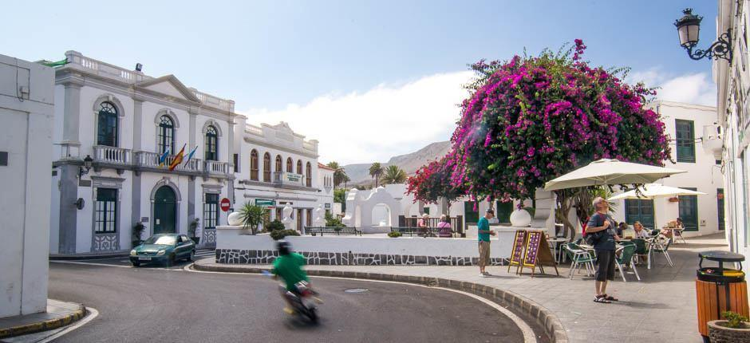

Haría
Haría es un municipio situado en la isla de Lanzarote en la provincia de Las Palmas.
Es un pueblo muy tranquilo porque aquí dan carnavales, sin tanto ruido y muchas montañas que ver.
¿Qué es lo que se puede hacer?
- Puedes visiar la Casa Museo de César Manrique para visitar sus artes
- Hay mercadillos que aparecen en los sábados con puestos de frutas y verduras
- Cueva de los verdes

Haría de amanecer
Saber más sobre Haría
Horario de mercadillo
Puedes explorar rincones que están dentro del pueblo de Haría